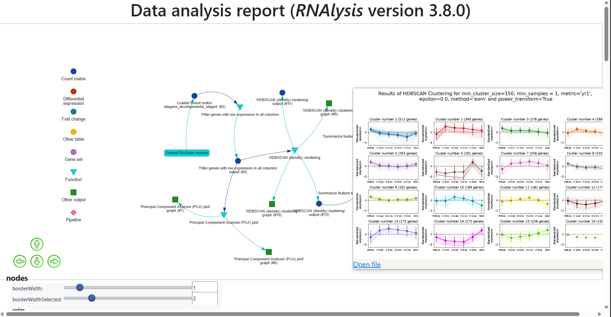
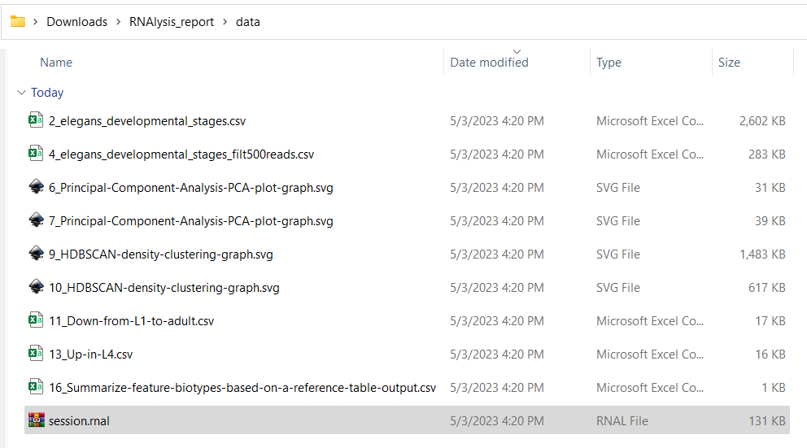

Frequently asked questions
Installation
I get an error message when I try to install RNAlysis. what can I do?
Try one of the following methods to solve your problem:
Make sure that your computer has an internet connection while you are installing RNAlysis.
Instead of installing the full version of RNAlysis, try installing the basic version first by using the command:
pip install RNAlysis
If that worked, your system might have trouble installing one of the extended features of RNAlysis. Now you can find out which feature is causing issues by installing them one by one, by running the following commands one after the other:
pip install RNAlysis[fastq] pip install RNAlysis[hdbscan] pip install RNAlysis[single-set] pip install RNAlysis[randomization]
See the next FAQ items to solve issues with a specific extended feature.
Make sure your version of Python is supported by RNAlysis. Currently, any Python version between 3.7-3.10 should work, but 3.8 would probably work best.
Try creating a new Python environment for RNAlysis, or re-installing Python.
If you are still having trouble installing RNAlysis, please submit a bug report or contact me.
I get an error message when I try to install the RNAlysis hdbscan feature. what can I do?
The HDBSCAN module makes heavy use of pre-compiled code for performance, but that unfortunately means that installation can cause issues, particularly on computers running Windows. To successfully install HDBSCAN, try one of the following solutions:
1. If your computer has a Windows operating system, try installing Microsoft Visual C++ 14.0. After the installation is done, restart your computer, and try to install the HDBSCAN module again. 2. Instead of installing Python normally, try installing the Anaconda or Miniconda Python distribution. You can then install HDBSCAN via anaconda and RNAlysis via pip, like so:
conda install hdbscan pip install RNAlysis[all]
I get an error message when I try to install the RNAlysis randomization feature. what can I do?
The randomization module makes heavy use of the Python package numba for performance, but that unfortunately means that installation can cause issues, particularly on computers running Windows. To successfully install numba, try one of the following solutions:
Make sure your Python version is supported by RNAlysis. Currently RNAlysis supports Python versions 3.7-3.10, but version 3.8 usually works best.
Try creating a new Python environment for RNAlysis, or re-installing Python.
3. Instead of installing Python normally, try installing the Anaconda or Miniconda Python distribution. You can then install numba via anaconda and RNAlysis via pip, like so:
conda install numba pip install RNAlysis[all]
I am trying to open RNAlysis for the first time and it takes a long time to load/doesn’t load at all. What should I do?
When you run RNAlysis for the first time, it will attempt to download the tutorial videos from the official RNAlysis repository. This might take a long time if you have a slow internet connection, and might not work at all if your computer is not connected to the internet. To solve this problem, try one of the following solutions:
Connect your computer to the internet the first time you open RNAlysis, to allow it to download the tutorial videos.
If the automatic download of the videos doesn’t work, you can download them manually from the following link, and copy them to the RNAlysis appdata directory. On a Windows computer, it would look something like this:
C:\Users\<user>\AppData\Roaming\RNAlysis\RNAlysis\videos
On a Linux computer, it would look something like this:
/home/<user>/.local/share/RNAlysis/videos
On a MacOS computer, it would look something like this:
/Users/<user>>/Library/Application Support/RNAlyisis/videos
Can I install a previous version of RNAlysis?
- Yes. To install a specific version of RNAlysis (for example version X.Y.Z), use the following code:
pip install RNAlysis[all]==X.Y.Z
Usage
I am trying to view the RNAlysis quick-start guide, but see only blank pages. What should I do?
When you run RNAlysis for the first time, it will attempt to download the tutorial videos from the official RNAlysis repository. If your computer was not connected to the internet when opening RNAlysis for the first time, these tutorial videos may not have downloaded properly. . To solve this problem, try one of the following solutions:
Connect your computer to the internet and open RNAlysis again, to allow it to download the tutorial videos.
If the automatic download of the videos doesn’t work, you can download them manually from the following link, and copy them to the RNAlysis appdata directory. On a Windows computer, it would look something like this:
C:\Users\<user>\AppData\Roaming\RNAlysis\RNAlysis\videos
On a Linux computer, it would look something like this:
/home/<user>/.local/share/RNAlysis/videos
On a MacOS computer, it would look something like this:
/Users/<user>>/Library/Application Support/RNAlyisis/videos
Try uninstalling RNAlysis, and then re-installing it:
pip uninstall RNAlysis pip install RNAlysis[all]
If all of these approaches failed, you can always browse the online version of the quick-start guide.
I am trying to apply a function to my data table. How do I know what all the different functions and parmeters do?
Since RNAlysis offers a large array of functions that do many different things, it is nearly impossible to remember what each function does, or what is the meaning of each of the functions’ parameters. Fortunately, this information is all documented!
After selecting a function through the RNAlysis graphic interface, click on the blue question mark button near the function selection box to read a short summary of what the function does.
Click on the blue question mark buttons next to the individual parameters, or hover on the parameter names, to learn what they do and what types of parameters they accept.
Click on the link at the bottom of the RNAlysis window to go view the full online documentation of the particular function you want ot use. This page will contain a short description of what the function does, the different parameters it calls, and some usage examples and screenshots.
I want to use a particular statistical method or algorithm available in RNAlysis. How do I know exactly what it does and how it works?
If you what to know how specific algorithms (e.g. CLICOM clustering, ‘elim’ method of GO annotation propagation, randomization enrichment test, etc), the best place to look would be the full documentation of the specific function you’re looking it. You can find a link to a function’s full documentation by clicking the link at the bottom of the RNAlysis window after you selected the function. If you couldn’t find the information you were looking for, try looking at the user guide.
What file formats are supported by RNAlysis?
RNAlysis can load tables or gene sets that arrive as comma-separated tables (CSV files - with the .csv suffix), or tab-separated tables (TSV files - with the .tsv suffix). For example:
gene,cond1,cond2,cond3
A,5,17,0
B,32,0,3
C,125,114,285
or:
gene cond1 cond2 cond3
A 5 17 0
B 32 0 3
C 125 114 285
In addition, RNAlysis can load gene sets that arrive as a text file (.txt suffix), where each line in the file is a single gene name/ID. For example:
gene1
gene2
gene3
gene4
If your data arrives in a different file format, you will need to convert it to one of the above formats before loading it into RNAlysis. Conversion can be done fairly easily through programs such as Google Sheets, Microsoft Excel, or LibreOffice Calc - especially if your table is saved in a spreadsheet format (like .xlsx). First, open your folder with one of the above programs; and then click “File”->”Save As…”, and save the table in the format “CSV (comma delimited) .csv”.
What types of tables can I analyze with RNAlysis?
RNAlysis supports any kind of tabular data. However, RNAlysis offers specialized types of functions and analyses for specific types of tables. In particular, RNAlysis offers specialized functions for count matrices (raw or normalized), for differential expression tables (preferrably in the DESeq2 format, but other formats are also supported), and for single-column tables with fold-change values. To use those specialized functions, you need to specify the type of your table when first loading it into RNAlysis.
When trying to run clustering/enrichment/other functions in RNAlysis, a progress bar appears but nothing happens. What can I do?
By default, RNAlysis attempts to run performance-intensive tasks such as clustering and enrichment in parallel processing mode, in order to save time. However, some systems or setups don’t support parallel processing very well, and can lead to tasks that never finish running successfully. If after waiting a few minutes nothing changes, restart RNAlysis, and then re-run the function in sequential mode. The running mode can be changed via the parallel_backend parameter of the function, or by setting the parallel parameter to False.
I ran into a problem that is not specified here. What can I do?
Please submit a bug report through GitHub, and we will do our best to help solve your problem.
Automatic analysis reports
How can I generate an analysis report?
To generate an automatic analysis report with RNAlysis, follow these steps:
Open the RNAlysis graphical interface.
Turn on automatic report generation through the ‘File’ menu before your begin your analysis.
Analyze your data as you would normally.
Open the ‘File’ menu and click on “create session report”.
How can I view an analysis report?
To view an analysis report generated with RNAlysis, follow these steps:
If the report is currently compressed into a ZIP file, unzip it.
Enter the “RNAlysis_report” directory.
Double-click on the “report.html” file to open it in your internet browser.
How can I access the data and figures that appear in an analysis report?
There are two ways to access the data and figures in an analysis report:
The first option is hover on a node in the interactive report, and once the description pane appears click on the “Open file” link:
{kind=link}
The second option is to open the report directory “RNAlysis_report”, and then enter the report directory “data”. There you will find all of the data files generated in the report, as well as a “session.rnal” session file that can be loaded into RNAlysis:
{kind=link}
Do I need to generate analysis reports manually?
No! RNAlysis generates analysis reports automatically based on the functions you used and the outputs you generated through your session. You only need to turn on automatic report generation before your begin your analysis, and click on “create session report” once you are done.
Can I edit my analysis report?
Currently, the interactive analysis reports generated through RNAlysis cannot be edited.
RNAlysis crashed during an analysis! Can I restore my automatic analysis report?
Unfortunately, it is currently not possible to restore your automatic analysis reports if RNAlysis closes in the middle.
Can I create an analysis report through the programmatic interface?
Currently, interactive analysis reports can only be generated through the RNAlysis graphical interface. However, you can achieve similar levels of reproducibility by sharing your RNAlysis Python scripts, as well as any graphs, tables, and Pipelines you generated.